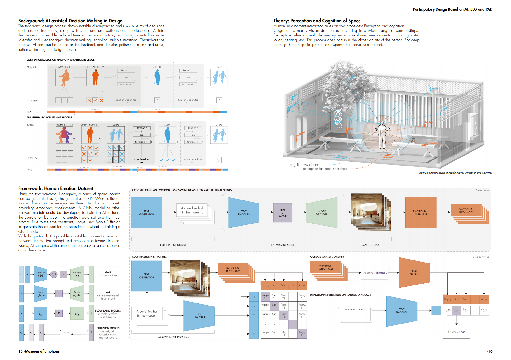
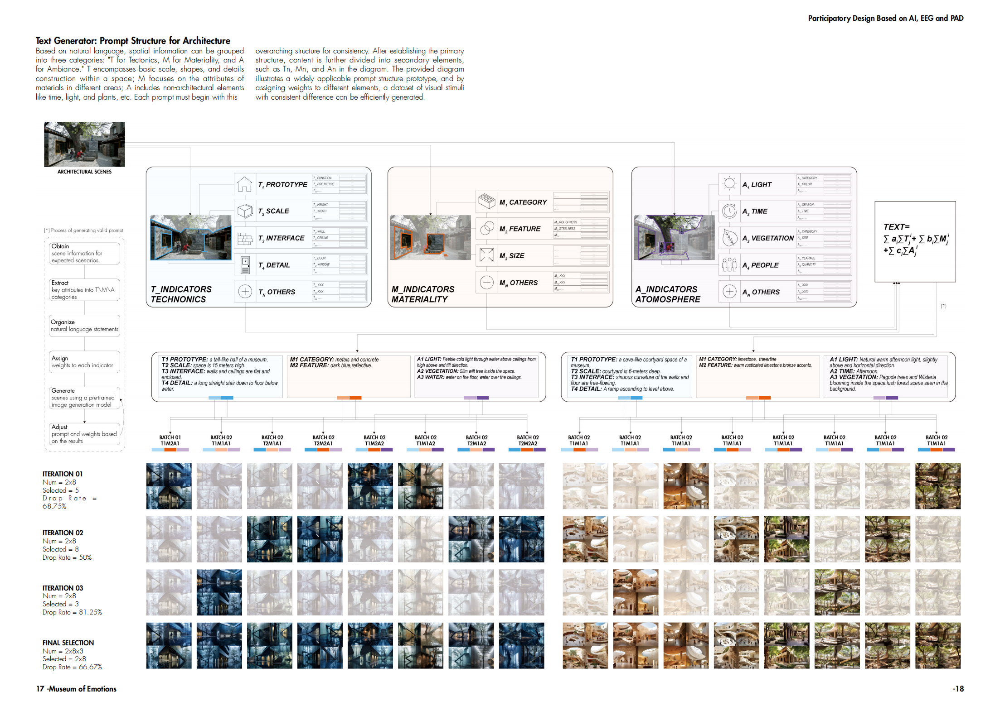
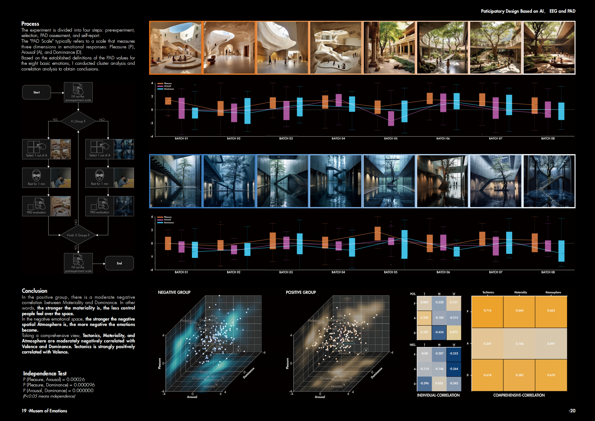
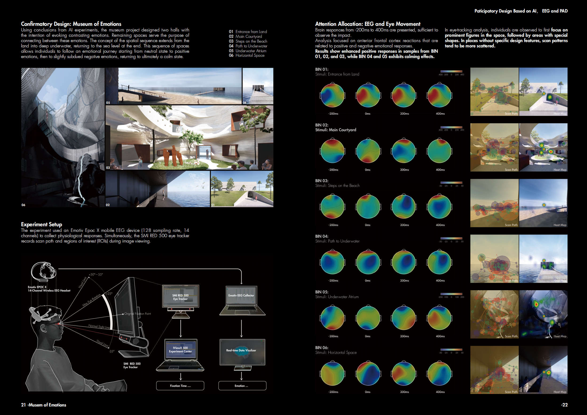
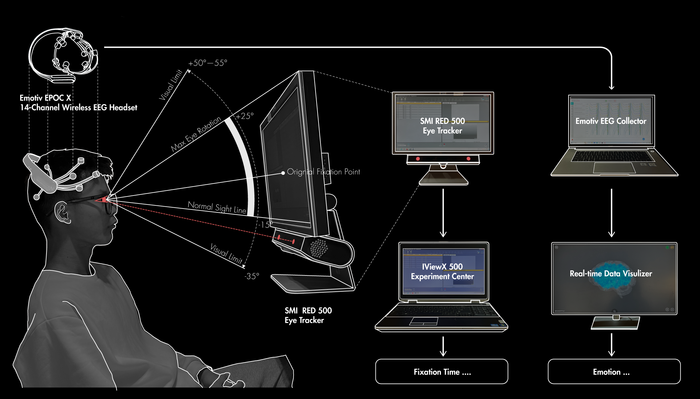

Study on the Impact of AI-Generated Architectural Renderings on Emotions (Patent Pending)
-
Using the text generator I designed, a series of spatial scenes can be generated using the generative TEXT2IMAGE diffusion model. The outcome images are then rated by participants providing emotional assessments. A CNN model or other relevant models could be developed to train the AI to learn the correlation between the emotion data set and the input prompt. Due to the time constraint, I have used Stable Diffusion to generate the dataset for the experiment instead of training a CNN model.
With this protocol, it is possible to establish a direct connection between the written prompt and emotional outcome. In other words, AI can predict the emotional feedback of a scene based on its description.
1.AI Text Generator
Based on natural language, spatial information can be grouped into three categories: "T for Tectonics, M for Materiality, and A for Ambiance." T encompasses basic scale, shapes, and details construction within a space; M focuses on the attributes of materials in different areas; A includes non-architectural elements like time, light, and plants, etc. Each prompt must begin with this overarching structure for consistency. After establishing the primary structure, content is further divided into secondary elements, such as Tn, Mn, and An in the diagram. The provided diagram illustrates a widely applicable prompt structure prototype, and by assigning weights to different elements, a dataset of visual stimuli with consistent difference can be efficiently generated.
2.Usability Tests
I recruited 20 participants for a usability test on the emotional impact of a text generator. First, they were asked to select the best-quality image from each group of rendered images, and then rate the emotional impact of the chosen image based on the PAD scale. The results showed that Tectonics, Materiality, and Atmosphere are moderately negatively correlated with Valence and Dominance. Tectonics is strongly positively correlated with Valence. This is generally consistent with the experimental hypothesis.
3.Confirmatory Practice
Based on the conclusions drawn from the PAD evaluation, I designed a series of spatial sequences reflecting emotional changes with the theme of an emotional museum. I then recruited 34 participants for EEG and eye-tracking experiments to assess the emotional impact of the spatial objects. The results show enhanced positive responses in samples from BIN 01, 02, and 03, while BIN 04 and 05 exhibited calming effects. In the eye-tracking analysis, individuals were observed to first focus on prominent figures in the space, followed by areas with special shapes. In places without specific design features, scan patterns tended to be more scattered.
-
Keywords: Quantitative UX Research, Usability Test, Sentiment Computing, Stable Diffusion, AI, EEG, SCR
Project Type:
P.R.C National Project, Tsinghua University, Leaded by Prof.Weimin Zhuang
'Museum of Emotions' Competition Buildner.com
'AI+Architecture Edition 2' Design Workshop
Time: 2023.5-2024.7
Instructor: Prof.Weimin Zhuang, Ercument Gorgul
Collaborator: Individual Work
Main Contributions:
1. Invented a 3-tiered prompt method for text input in Gen-AI tools and wrote a patent disclosure document for patent application;
2. Conducted usability testing with 34 participants for the invented method using eye tracking, EEG, EDA, and the PAD scale, and performed data analysis using MATLAB and Python;
Patent: Junxiao, L.; Ercument, G. (Pending). Method, Device, Electronic Apparatus, and Storage Medium for AI-Generated Architectural Scenes (CN. 202311280838.6). China National Intellectual Property Administration.


